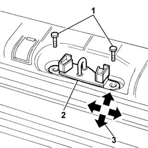
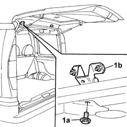

7015A14 tailgate - adjust centring and profile - includes hinge and compartment seal adaptation
- Path
- Procedures > 70 FITTINGS > 7015 TAILGATE/ > 7015A tailgate assembly > 7015A14 tailgate - adjust centring and profile - includes hinge and compartment seal adaptation
- Kind
- repair procedure (removal / refitting; the operation number is the code)
- Applies to
- all engines; all production periods
- Interactive page
- https://sloeber94.github.io/elrnDB-fDbl/en/#/2585032
Applies to: all engines; all production periods
Applies to: engines: 1.2 8v, 1.6 16v, 1.3 JTD 16V, 1.9 JTD 8V, 1.9 DIESEL; all production periods; only with equipment: Doblò trim level
Proceed as follows to adapt tail-gate length and take up adherence in the tailgate compartment seal.
1. Loosen the striker retaining screws.
2. Move the striker into the correct position, using the slotted holes on the striker.
3. Permitted adjustment movements are indicated by arrows.

Applies to: engines: 1.2 8v, 1.6 16v, 1.3 JTD 16V, 1.9 JTD 8V, 1.9 DIESEL; all production periods; only with equipment: Doblò trim level
Following adjustment, tighten the lock striker screws to the specified torque.
Proceed as follows to adapt the tail-gate horizontally.
1. Loosen bolt (1a) securing tailgate hinge (1b) on the body side.

Applies to: engines: 1.2 8v, 1.6 16v, 1.3 JTD 16V, 1.9 JTD 8V, 1.9 DIESEL; all production periods; only with equipment: Doblò trim level
On completion of adjustment, tighten the tailgate hinge bolt, body side, to torque.
 | Fastening | Component | Ø | Value (daNm) |
|---|---|---|---|---|
- | - | - | - | - |